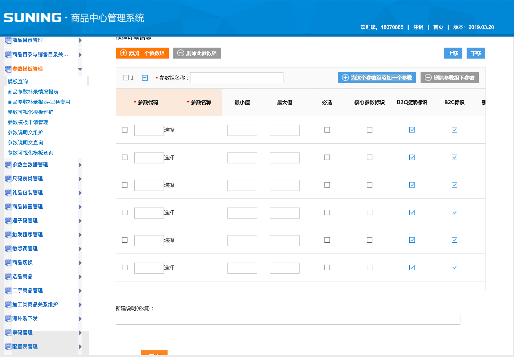
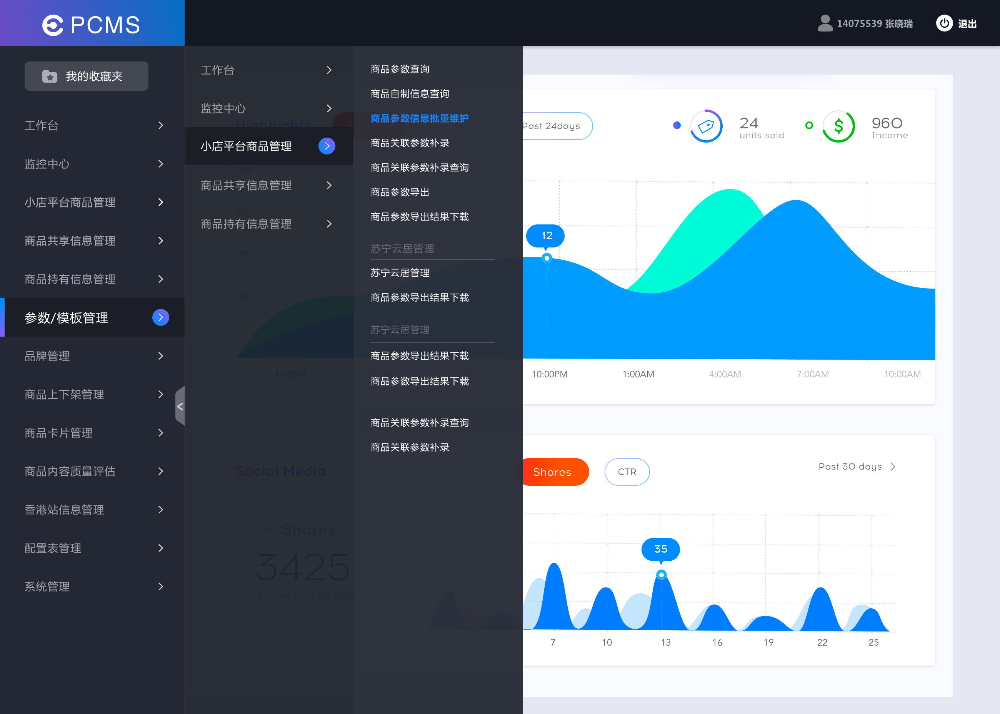
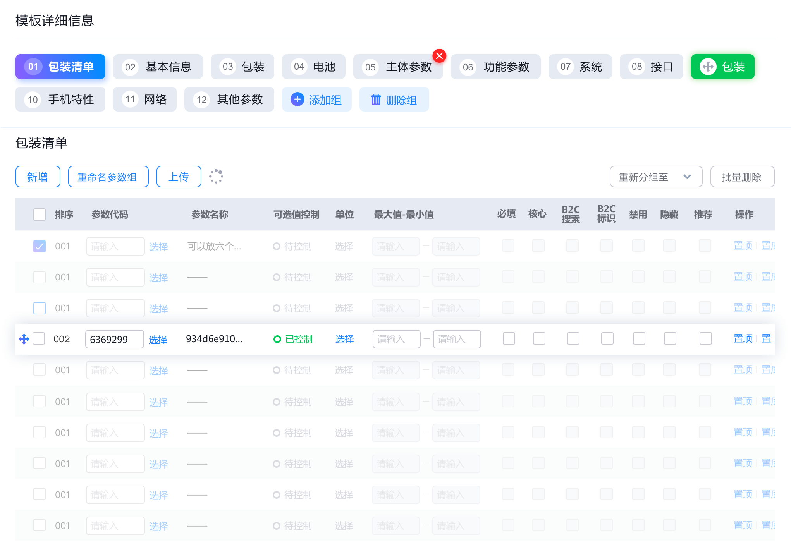
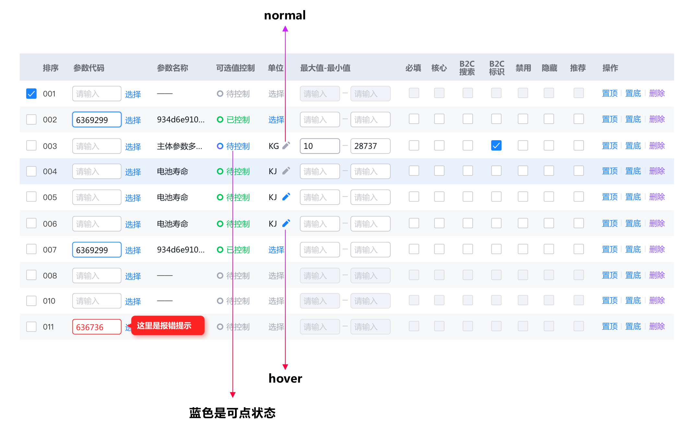
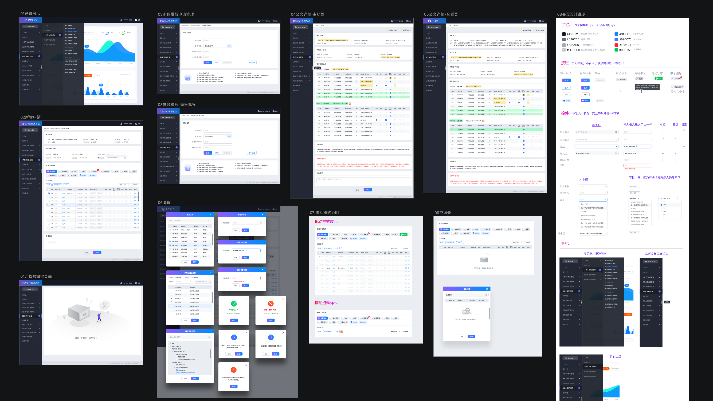

产品初期时，后台系统只是为了支持前台，实现功能即可。但随着产品愈发庞大，每一个前台的小小的功能优化，都可能是由后台一整套支持体系，和一整个运营组维护。因此，后台系统的体验也时刻影响着团队成员的工作效率，影响着一个产品在用户面前的形象。后台系统的体验提升，不仅是使用体验的提升，更多的是效能的提升，和产品逻辑的规范。
该系统原版未经设计，多年前由开发人员直接写就。在原有基础上扩展，已无法解决体验问题，且其功能设定直接影响苏宁易购全平台前台商品详情页的展示。故系统必须整体进行重构改版，才能从根本上解决问题。
交互提前介入业务方需求研讨
整理设计组件库，快速调用
遵循初版风格，UX此后直接进行视觉设计
可尝试较为新颖的交互方式
不同页面控件须具设计一致性
大胆摒弃不合理交互，创造极致体验
分批改版，新旧系统同时存在
一切设计以便于用户快捷操作为中心
规划方案 输出设计
根据希克定律（Hick’s Law)：做决定所耗时间，与选项数目息息相关——选项越多，耗时越长。原版菜单仅一级导航就接近50个，二级导航达数百个，且均在同列展示，已严重制约用户查找。首先敦促PM与业务方沟通，重新梳理菜单结构，为所有一级导航增加父级，原一级导航变为新二级导航，原二级导航变为新三级导航，且在不同区域逐级展开，最大程度加速用户筛查。
设计前：50个一级导航，单列展示，难以查找
设计后：新增16个一级导航，原一级变二级，渐进展示，常用菜单可收藏
原版单页面多表格排序仅靠左侧上下移动按钮，表格内行间排序也依赖操作栏，操作效率极低。改版后不同表格间增加tab排序，表格内支持行间拖动交互。同时鉴于页面信息，编辑、拖拽、删除等高级操作入口仅在特定操作下（hover/click）展示——认知减负，提升信噪比。
随心拖动，正和心意：多表格tab拖动排序，表内数据hover拖动排序
高级操作触发展示
上线效果（视频）
部分页面一览
虽然中后台系统无法被用户直接触及，但其逻辑之规范，体验之高效，最终必将通过层层映射展现在用户面前。对于电商来说，它或许体现在发货、物流、质检等屏幕外的体验上，或许隐藏在前台界面的字里行间之中，这同样是产品体验中不可或缺的一环，需要我们为此不断添砖加瓦，贡献力量。